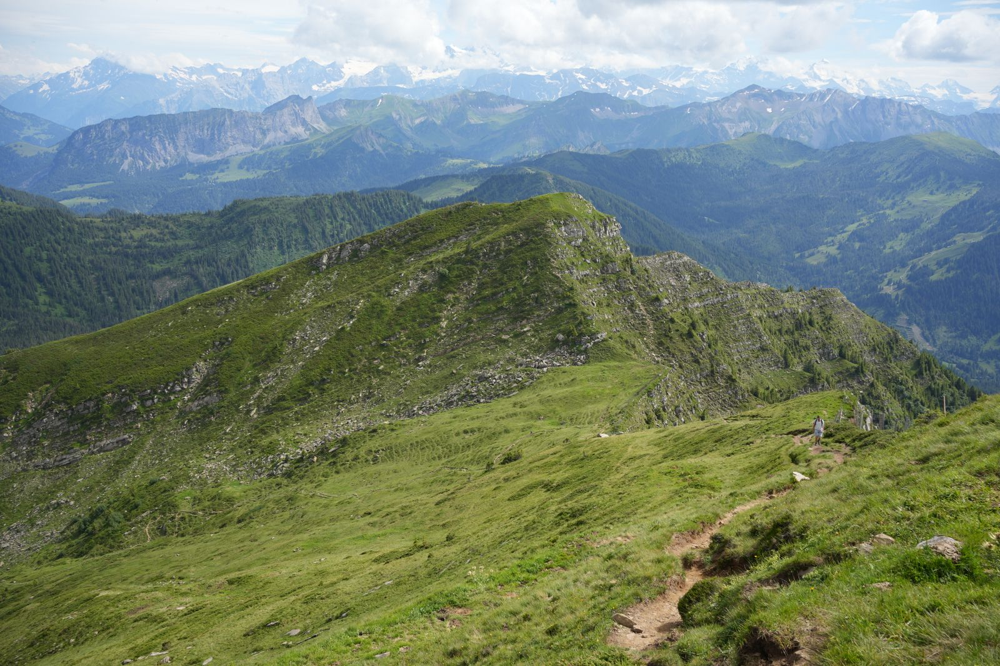
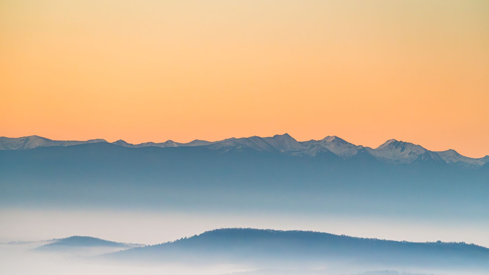
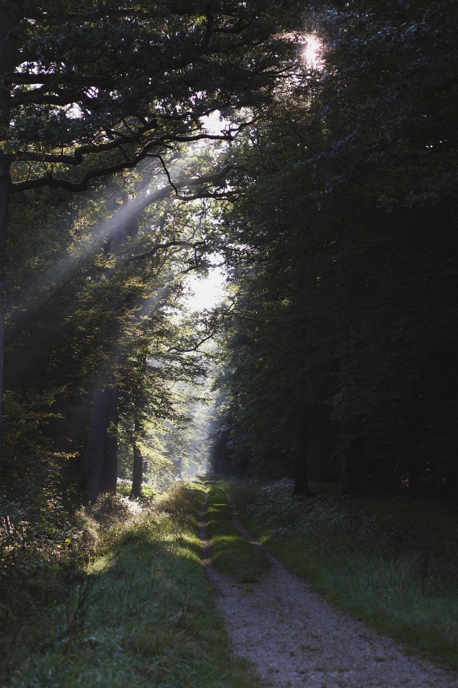
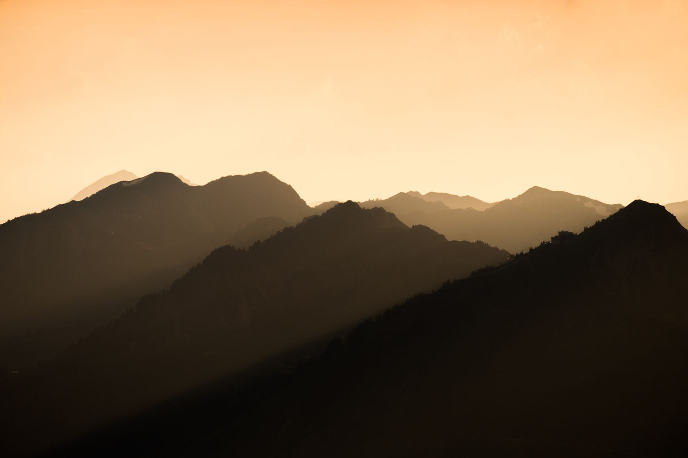

Sample Program
Ridgeline Leadership Traverse
A multi-day backcountry trek for executives and small teams, built around decision-making under real conditions.

Wilderness Leadership & Retreats
White Mountain Adventure Institute designs wilderness expeditions and leadership retreats that strip away the noise — so you return with clearer judgment, deeper trust, and the kind of resolve that only comes from earning it outdoors.
The Experience
A White Mountain program runs on two fires — one you build outdoors, and one that gets lit in conversation once the packs are down. Neither works without the other.


Sunrise ridge climbs, exposed scrambles, and days that ask more of your body than your calendar ever does. Physical challenge is the entry point — not the point itself.
Around the fire, in small groups and one-on-one with a guide, the day's physical honesty becomes emotional honesty. This is where the real work happens.
You leave with more than a good story — a working framework for how you make decisions under pressure, and people who watched you find it.
Upcoming Programs
Every program pairs real wilderness challenge with structured reflection. Formats range from single-day team expeditions to multi-day backcountry retreats.

A multi-day backcountry trek for executives and small teams, built around decision-making under real conditions.
A shorter transformational retreat combining guided hikes, reflective practice, and community around the fire.

A custom wilderness expedition designed for organizations building trust, communication, and shared judgment.
Our Approach
Every program follows the same arc, whether it runs one day or ten. The terrain changes; the method doesn't.
01
We put real physical stakes in front of every group — elevation, exposure, weather. Confidence built here doesn't fade at the trailhead.
02
Trained guides facilitate structured reflection — in pairs, in small groups, and around the fire — so the day's effort becomes real insight.
03
Every participant leaves with a concrete practice for decision-making and presence, built to survive first contact with a Monday morning.

The Land
Every program is rooted in New Hampshire's White Mountain National Forest — terrain that ranges from hardwood valley trails to exposed alpine ridgeline above treeline, often in the same day.
That range is deliberate. It lets us match the physical demand of a program to the group in front of us, from a first-time day hike to a multi-day traverse of the Presidential Range.
What People Carry Home
In Their Words
Placeholder quotes below — replace with real participant testimonials before launch.
"[Add a participant quote describing a specific shift they experienced during a program or retreat.]"
— [Participant Name], Ridgeline Leadership Traverse
"[Add a second participant quote — ideally naming a concrete before/after moment.]"
— [Participant Name], Solstice Renewal Retreat
"[Add a third quote, perhaps from a corporate or team-program sponsor.]"
— [Name, Title], Corporate Team Expedition
Ready When You Are
Tell us what you're working through — as a person, a team, or an organization — and we'll help you find the right program.